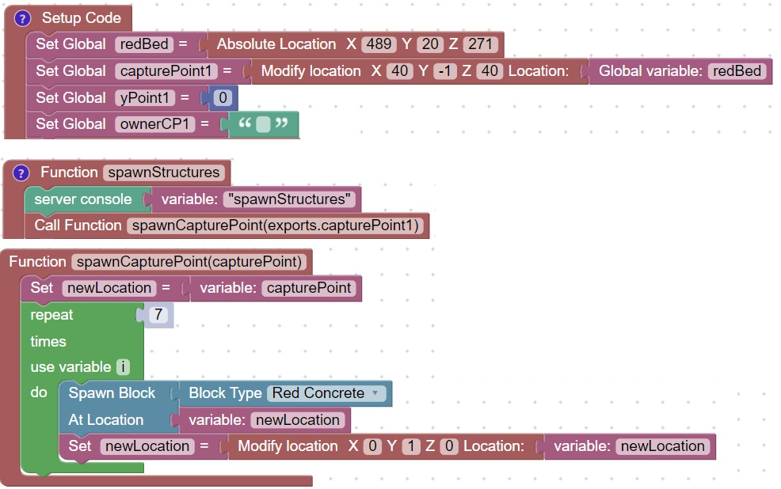
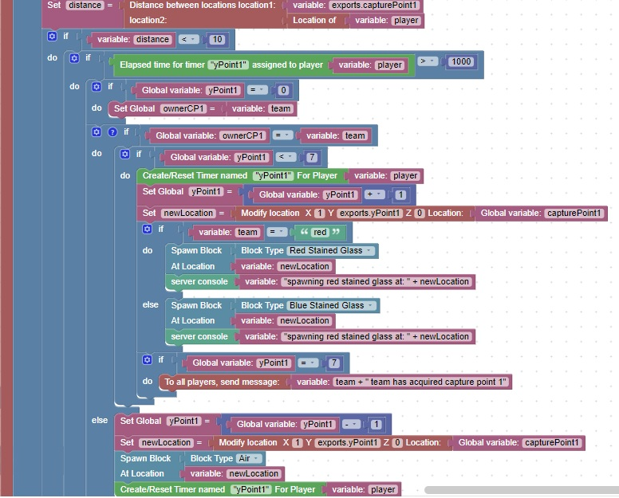

Capture Points
In the popular Battlefield games, capture points are acquired when a soldier occupies a nearby location
Using code similar to our auto-defender we can acquire capture points for red or blue team members
When they are nearby a "flag" is raised in their color
First we need to spawn a capture point:

Next we will create code similar to the auto-defender to raise the flag
This code will be called by the playerMove event
